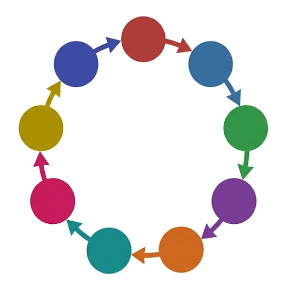

本文書はCLASS-S相当の機密指定を受けています。閲覧にはアクセスコードの入力が必要です。

(2005年霞坂神社事案を含む計██件を確認)
本対象については、統一された名称・表記が存在しない。以下に確認されている呼称の例を示す。
| 出典 | 呼称 | 備考 |
|---|---|---|
| CAA内部文書 | 観測対象・零 | 本文書における正式コード名 |
| 霞坂地域の口伝 | 「アレ」「山の向こう」 | 直接的な名指しを避ける婉曲表現 |
| 霞坂神社 由緒書き | 白霞大神(しらかすみのおおかみ) | 後年当てはめられた表向きの祭神名と推定される |
| その他伝承・信仰圏 | ████████ | 調査継続中 |
なお、本対象に対し、固有名として恒常的に機能し得る呼称を新たに定め、付与する行為は、部門及び個人を問わず固く禁ずる。名称の固定化は対象への注意及び意味づけの集中を招き、既知の事案において結界の綻びを助長した一因になり得ると考えられるためである。「観測対象・零」の呼称自体、便宜上の記号にすぎず、これをもって対象を規定するものではない。
本文書には、観測対象・零に関する補遺資料(文書番号:OBS-000-APX)への参照が存在する。当該資料には、本文書において黒塗り処理された区画の一部を含む、より詳細な記録が保管されている。
過去の閲覧記録において、当該資料への接触後に認識阻害及び精神汚染の兆候を呈した事例が複数報告されている。症状に既知の治療法はなく、進行を遅らせる対症療法があるのみである。
閲覧は七枢冠の個別承認を受けた者に限られる。承認を受けていない構成員による接触は、規約第17条の重大な違反行為としてではなく、本人の安全に対する重大な危険行為として扱われる。
それでもなお閲覧を希望する場合は、自己の判断と責任において以下へ進むこと。協会はいかなる結果についても責任を負わない。
→ OBS-000-APX を開く